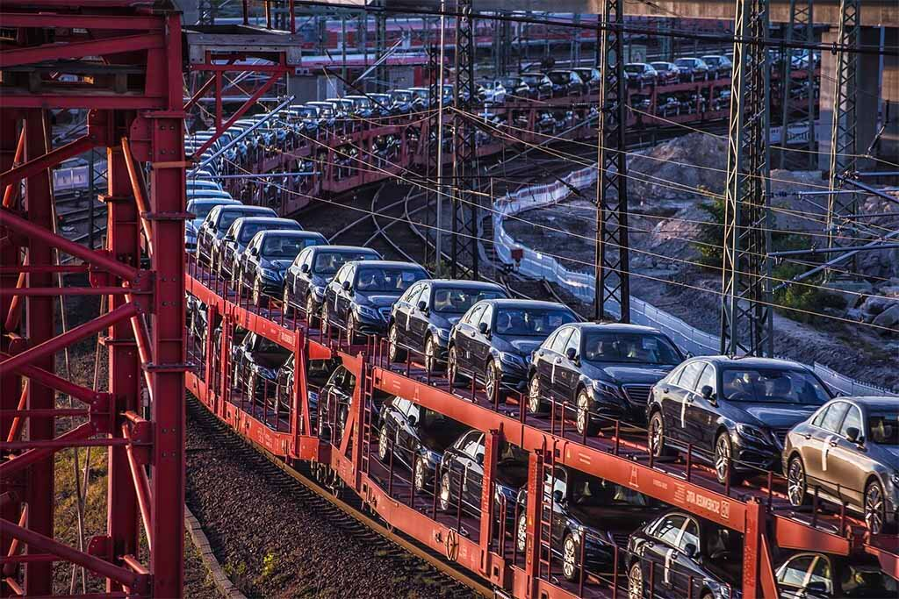

Final Inspection / Testing
Finishing Touches for a seamless delivery
Finishing Touches for a seamless delivery
When all of the stages of production have been completed, the fully-assembled car is then thoroughly inspected to ensure there are no defects before sending it to car dealerships. This process also involves checking for any imperfections or inconsistencies with the exterior or interior. Some of the checks include the following:
|
|
As well as before presentation multiple crash tests, to ensure the maximum saftey of all passengers.
And lastly some additional off-line tests will be performed.
Such as test tracks, where the vehicle is driven onto a special test track to check for “rattles,vibrations and wind noise.
Wheel alignment, where the suspension and wheel alignment will be checked.
Rolls test, a computer test of all the electronic functions under various simulated driving situations (e.g, temp, speed,etc.).
And a Quality shower, a water shower test to ensure that the vehicle is sealed properly.
Now the car is ready for delivery.
